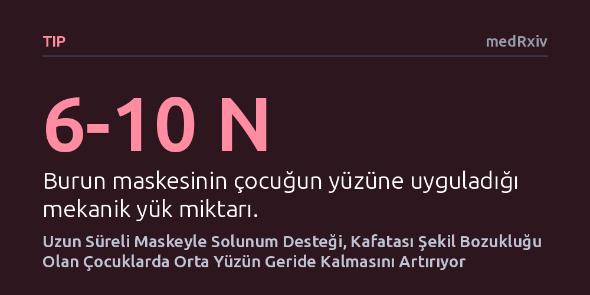

TIP · medRxiv · 2026-10-26
Araştırmacılar, kafatası kemikleri erken kaynayan çocuklarda uyku apnesi için kullanılan burun maskelerinin yüz gelişimini nasıl etkilediğini inceledi. Bulgular, maske baskısının özellikle erken yaşta ve uzun süreli kullanımda yüzün orta bölgesinin daha fazla geride kalmasına yol açtığını gösterdi.
Hayat kurtaran solunum cihazlarının, hassas kemik yapısına sahip çocuklarda yüz gelişimini istenmeyen şekilde etkileyebileceğini ve tedavinin mekanik yüklerinin de yakından izlenmesi gerektiğini gösteriyor.

Bazı çocuklarda genetik etkenler nedeniyle kafatası kemikleri arasındaki dikiş hatları anne karnında veya erken bebeklik döneminde vaktinden önce kaynaşır. Kraniyosinostoz olarak adlandırılan bu tablo, yalnızca kafa şeklini değil, üst çene ve elmacık kemiklerinin yer aldığı orta yüz bölgesinin gelişimini de olumsuz etkiler. Yüz kemiklerinin geride kalması hava yolunu daraltarak çocuklarda hayati tehlike yaratabilecek şiddetli tıkayıcı uyku apnesine yol açar. Kalıcı kemik düzeltme ameliyatları genellikle büyümenin belirli bir aşamaya gelmesi beklendiğinden ertelenir; bu bekleme sürecinde hava yolunu açık tutmak için burun maskesiyle sürekli pozitif hava basıncı (CPAP) tedavisi uygulanır.
CPAP cihazları gece boyunca basınçlı hava üfleyerek solunum yolunun çökmesini önler ve çocuğun sağlıklı oksijen almasını sağlar. Ancak henüz gelişimini tamamlamamış, mekanik etkilere karşı son derece hassas çocuk kemiklerine her gece saatlerce uygulanan bu maske baskısının uzun vadeli sonuçları uzun süredir tartışmalıydı. Araştırmacılar, solunumu güvenceye almak için kullanılan bu hayat kurtarıcı maskelerin, çocukların zaten geride olan yüz iskeletini daha da geriye itip itmediğini ve bu etkinin arkasındaki biyomekanik etkenleri ortaya çıkarmayı hedefledi.
Araştırma ekibi, maskelerin yüz büyümesi üzerindeki etkisini çok yönlü bir metodolojiyle araştırdı. İlk olarak, FGFR gen mutasyonuna bağlı kraniyosinostoz tanısı konmuş ve uzun süre burun CPAP'ı kullanmış çocukların üç boyutlu yüz taramaları incelendi. Bu taramalar, benzer başlangıç yüz özelliklerine sahip olan ancak CPAP tedavisi görmeyen çocukların büyüme eğrileriyle geriye dönük olarak karşılaştırıldı.
Sadece klinik gözlemlerle yetinmeyen araştırmacılar, maskelerin yüze bindirdiği fiziksel kuvveti doğrudan ölçmek için hastaların anatomisine birebir uyan üç boyutlu yüz modelleri üretti. İçine basınca duyarlı hassas sensörler yerleştirilen bu modeller üzerinde maske kayışlarının gerginliği ve temas yüzeylerindeki kuvvet dağılımı deneysel olarak test edildi. Elde edilen veriler; çocuğun yaşı, tedavinin süresi ve başlangıçtaki yüz yapısı gibi temel risk faktörlerinin büyüme sapmasındaki payını ortaya koyan yapısal eşitlik modelleriyle analiz edildi.
Elde edilen sonuçlar, CPAP tedavisi gören çocukların yüz büyüme çizgisinin, tedavi görmeyen benzer hastalardan belirgin şekilde ayrıştığını gösterdi. Burun maskesi kullanan çocuklarda, yüzün orta bölgesinin geride kalma derecesinin beklenenden daha fazla arttığı belirlendi. Yani maske hava yolunu açık tutarken, uyguladığı kesintisiz mekanik basınçla yüz kemiklerinin öne doğru büyümesine karşı adeta bir direnç oluşturuyordu.
Laboratuvardaki biyomekanik ölçümler, standart maske kullanımının yüze ortalama 6 ila 10 Newton arasında sürekli bir mekanik yük bindirdiğini kanıtladı. Maske kayışlarının bilerek aşırı sıkılması bu kuvveti belirgin şekilde artırırken, maskeyi uygulayan kişinin deneyimli bir uzman veya uzman olmayan bir ebeveyn olması kuvvet dağılımında kayda değer bir fark yaratmadı. Yüze binen kuvvetin ve buna bağlı büyüme sapmasının en önemli belirleyicisinin çocuğun temel yüz anatomisi olduğu; CPAP kullanım süresi uzadıkça ve tedaviye başlama yaşı küçüldükçe bu gerilemenin belirginleştiği anlaşıldı.
Bu bulgular, CPAP tedavisinin derhal terk edilmesi gerektiği anlamına gelmiyor; zira tedavi edilmeyen uyku apnesi çocuk gelişiminde çok ağır hayati riskler barındırır. Ancak elde edilen kanıtlar, solunum tedavisinin kafa ve yüz kemiklerinin gelişiminden bağımsız düşünülemeyeceğini açıkça ortaya koyuyor. Hekimlerin uzun süreli maske kullanan bu çocuklarda yüz gelişimini üç boyutlu görüntüleme yöntemleriyle düzenli olarak izlemesi büyük önem taşıyor.
Klinik pratikte maske seçimi ve uyumu yapılırken çocuğun bireysel kemik yapısının dikkate alınması, maskelerin gereğinden fazla sıkılmaması ve solunum yönetimiyle cerrahi müdahale zamanlamasının eşgüdümlü planlanması gerekiyor. Böylece solunum güvenliği sağlanırken, ileride gerekebilecek karmaşık yüz rekonstrüksiyonu cerrahilerinin yükü de hafifletilebilir.